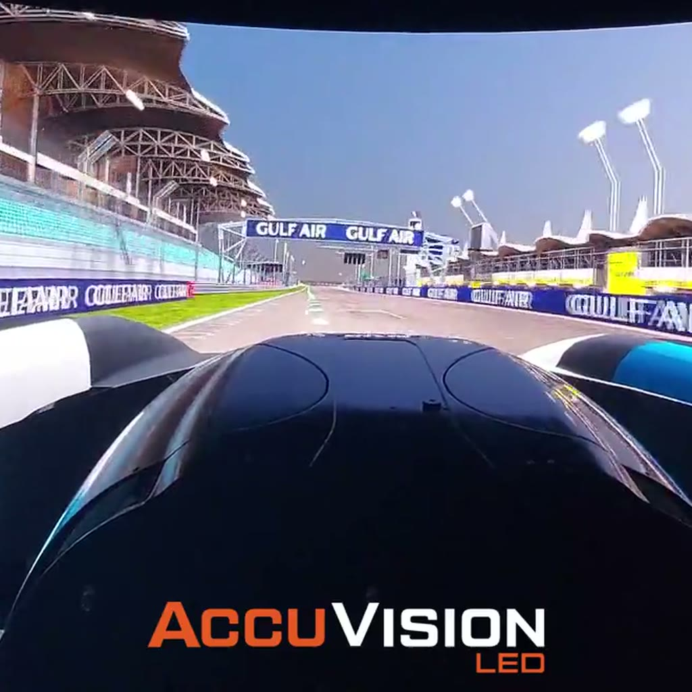

03 Built to fit
Google YouTube, Berlin.
22 bespoke LED steps on 2.5mm modules.
Then our in-house after-care team looks after it.


The Perfect Pixel People01 One cabinet
Every screen starts as cabinets like this one. Pixel pitches from 0.4mm indoors to 10mm outdoors.
02 Built and installed
On the wall: Bendac's own install, filmed as a time-lapse. 250M+ pixels installed so far.
03 Built to fit
22 bespoke LED steps on 2.5mm modules.
Then our in-house after-care team looks after it.
01 One cabinet

02 Built and installed
03 Built to fit
One in-house team plans, builds and commissions every Bendac screen, then keeps it perfect with its own after-care. 25+ years of LED experience, 250M+ pixels installed.